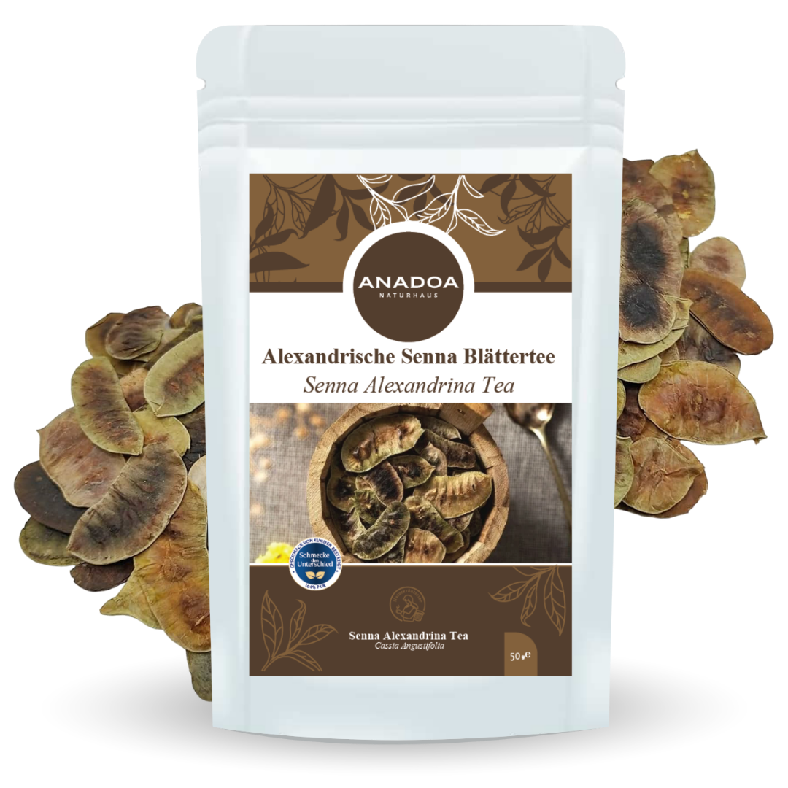

Alexandrische Senna: Das Erbe der arabischen Ärzte (Sinameki)
Es gibt Situationen, in denen milde Hausmittel (wie Kamille oder Fenchel) einfach nicht mehr ausreichen. Wenn der Darm komplett streikt und eine schwere, schmerzhafte Verstopfung (Obstipation) vorliegt, griff man im osmanischen Reich zu einer der stärksten bekannten Heilpflanzen: Der Alexandrinischen Senna (Cassia senna), im Türkischen als "Sinameki" bekannt.
Dieses Kraut, das seinen Namen von der ägyptischen Hafenstadt Alexandria ableitet (über die es im Mittelalter in den Orient verschifft wurde), wurde erstmals von den arabischen Ärzten des 9. Jahrhunderts ausführlich medizinisch dokumentiert. Die Blätter der Sennespflanze sind kein sanfter "Wohlfühl-Tee" für den Alltag. Sie sind ein hochpotentes, pharmakologisches Werkzeug der Natur. Das Anadoa Naturhaus bietet Ihnen unzerkleinerte, streng selektierte Sennesblätter in ihrer reinsten Form an.
Alexandrische Senna: Sennoside - Der pharmakologische Durchbruch
Die dramatische Wirkung der Sennesblätter basiert auf einer Gruppe von Inhaltsstoffen, die als Sennoside (Anthrachinon-Derivate) bezeichnet werden. Diese Moleküle sind von Natur aus "inaktiv", wenn Sie den Tee trinken.
Der geniale biochemische Mechanismus: Die Sennoside passieren den Magen und den Dünndarm völlig unbeschadet. Erst wenn sie im Dickdarm ankommen, werden sie von der dortigen bakteriellen Darmflora gespalten und zu ihrer aktiven, reizenden Form umgewandelt. Dort hemmen sie massiv die Aufnahme von Wasser aus dem Stuhl zurück in den Körper (antiabsorptiv) und stimulieren gleichzeitig die Einströmung von Wasser in den Darm (sekretagog). Zudem reizen sie die glatte Muskulatur der Darmwand so stark, dass diese sich massiv zusammenzieht (Peristaltik). Die Folge ist eine meist sehr weiche bis wässrige, vollständige Darmentleerung nach etwa 8 bis 10 Stunden.
Alexandrische Senna: Nur für den akuten Notfall!
Es kann nicht oft genug betont werden: Sennesblättertee ist KEIN Detox-Getränk und KEIN Abnehm-Tee!
Die massive Reizung der Darmschleimhaut ist eine medizinische Notfallmaßnahme bei akuter, tagelanger Verstopfung (z.B. durch Reisen, Stress oder Fehlernährung) oder zur Darmentleerung vor medizinischen Eingriffen. Wer Sennesblätter über Wochen oder als "Abnehm-Hilfe" (um Essen schneller auszuscheiden) missbraucht, schädigt sein Darm-Mikrobiom massiv. Der Körper verliert lebenswichtiges Kalium (was paradoxerweise die Darmmuskulatur lähmt und zur kompletten "Darmträgheit" führt). Sennesblätter machen bei Dauergebrauch abhängig, da der Darm verlernt, von alleine zu arbeiten!
Alexandrische Senna: Die anatolische Methode gegen Krämpfe
Da die Wirkung der Sennesblätter auf der glatten Muskulatur des Darms extrem "brachial" sein kann, berichten Anwender häufig von starken Bauchkrämpfen während der Entleerung.
Die traditionelle anatolische Pflanzenheilkunde hat hierfür einen genialen Trick: Trinken Sie Sennesblätter niemals pur! Mischen Sie die Sinameki-Blätter immer zu gleichen Teilen mit stark krampflösenden (spasmolytischen) Kräutern wie Fenchelsamen, Kamille oder Anis. Diese Begleitkräuter entspannen die Darmwand und lindern die "Peitschenschläge" der Sennoside, was die Darmentleerung weitaus angenehmer und sanfter gestaltet.
Alexandrische Senna: Exakte Dosierung und kalter Auszug
Bei potenten Heilpflanzen entscheidet die Dosierung über Heilung oder Vergiftung.
Die Mazeration (Kaltansatz) für weniger Krämpfe: Übergießen Sie die Blätter mit kochendem Wasser, lösen sich extrem viele Harze, die die Magenschleimhaut reizen können. Besser ist der Kaltansatz! Geben Sie ½ bis maximal 1 Teelöffel der Blätter (zusammen mit 1 TL Fenchel) in ein Glas mit kaltem Wasser. Lassen Sie es für 10 bis 12 Stunden (z.B. tagsüber) ziehen. Abends vor dem Schlafengehen trinken. Die abführende Wirkung setzt meist sehr zuverlässig am nächsten Morgen (nach ca. 8-10 Stunden) ein.
Alexandrische Senna: Warum Sennesblätter von Anadoa?
Die Konzentration der Sennoside schwankt extrem je nach Erntezeitpunkt und Anbaugebiet. Industrielle Pulver sind oft schwer zu dosieren.
Unsere Anadoa Alexandrinische Senna besteht aus ganzen, visuell überprüfbaren Blättern höchster Qualität. So haben Sie die absolute Kontrolle über die Dosierung (Sie können exakt die Anzahl der Blätter bestimmen, die Sie für Ihre individuelle Verdauung benötigen, beginnend mit z.B. nur 4-5 Blättern) und garantieren sich ein reines, ungestrecktes Apotheken-Kraut.
Häufig gestellte Fragen (FAQ)
Wie schnell wirkt der
Sennesblätter Tee?
In der Regel setzt die abführende Wirkung (Darmentleerung) etwa 8 bis 12 Stunden nach dem Trinken ein. Daher ist die ideale Einnahmezeit der Abend vor dem Schlafengehen, damit die Wirkung am nächsten Morgen stattfindet.
Darf ich den Tee zum Abnehmen
trinken?
NIEMALS! Das ist medizinisch extrem gefährlich. Sie verlieren kein Körperfett, sondern Wasser, Elektrolyte (Kalium) und zerstören langfristig Ihre Darmflora. Abführmittel wie Senna dürfen nur bei medizinischer Verstopfung angewendet werden.
Wie lange darf ich den Tee
hintereinander trinken?
Die absolute Höchstdauer der Anwendung (ohne ärztliche Aufsicht) beträgt 1 bis maximal 2 Wochen! Bei längerem Gebrauch kommt es zu einem Kaliumverlust, der die Darmmuskulatur lähmt (der Darm wird chronisch träge).
Warum bekomme ich nach dem
Trinken starke Bauchkrämpfe?
Das ist die normale pharmakologische Wirkung der Sennoside (sie reizen die Darmwand, um Bewegung zu erzeugen). Um dies zu mildern, mischen Sie den Tee (wie im Text beschrieben) unbedingt mit Fenchel oder Kamille oder nutzen Sie die Kaltansatz-Methode.
Dürfen Schwangere und Kinder
Sinameki trinken?
Striktes Verbot! Die starken Muskelkontraktionen können im Unterleib Wehen auslösen. Bei Kindern ist die Gefahr des Austrocknens und Elektrolytverlusts (durch massiven Durchfall) lebensgefährlich. Auch bei entzündlichen Darmerkrankungen (Crohn, Colitis) streng verboten.